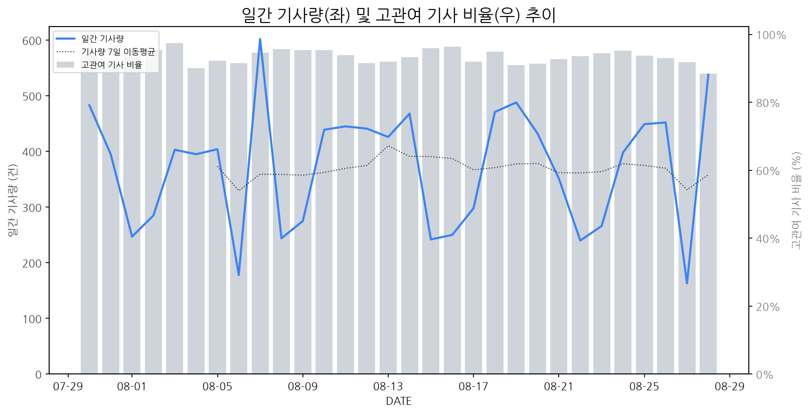

1
시장 활동 지표
기사량 추세 & 이상 징후 탐지
시장의 '전체 기사량'이 평소보다 비정상적으로 급증했는지(Spike)를 차트로 확인하고, LLM이 분석한 급등의 핵심 원인을 파악할 수 있음

고관여 기사란? 산업 연관 키워드로 수집된 기사들 중 디스플레이 키워드에 가중치를 반영하여 도출된 관련성 높은 기사
수집된 기사 수 (2026-08-28)
538
+53% WoW
기사량 변동 수준 (7일 이동평균 대비)
±6.7% 이하
2
오늘의 키워드
급격한 관심 ↑, 주목해야 할 키워드
1
삼성전자
+4.6σ
삼성전자가 게임스컴에서 2027년형 신형 오디세이 게이밍 모니터 4종을 공개하며 시장의 주목을 받았습니다.
Related Metrics
금일 언급량: 42, 전일 대비: +25
Interpretation
기술 리더십 부각, 시장 기대감 상승
Next Step
핵심 토픽 'Foldable_Display_Topic' 관련 신호입니다. 3번 섹션(키워드 감성분석)에서 해당 토픽의 감성 변동을 교차 확인하세요.
2
카카오
+4.3σ
SKT, 카카오, KT '모두의 AI' 경쟁 및 카카오뱅크 AI 이모지 퀴즈 정답 공개로 관심 집중
Related Metrics
금일 언급량: 12, 전일 대비: +12
Interpretation
AI 기술, 디스플레이 혁신 동력
Next Step
'카카오' 관련 상세 기사 및 경쟁사 반응 모니터링
3
엔비디아
+2.0σ
엔비디아 실적 호조와 반도체/SW주 강세 소식이 투자 심리를 자극했습니다.
Related Metrics
금일 언급량: 18, 전일 대비: +12
Interpretation
AI 반도체 수요 견조
Next Step
'엔비디아' 관련 상세 기사 및 경쟁사 반응 모니터링
4
수율
+1.9σ
AI, OLED, DDR5 등 첨단 기술에서의 수율 확보 경쟁 심화 및 중요성 부각.
Related Metrics
금일 언급량: 4, 전일 대비: +4
Interpretation
수율 향상=원가 절감/경쟁력 강화.
Next Step
'수율' 관련 상세 기사 및 경쟁사 반응 모니터링
3
실시간 Risk 키워드
경계해야 할 시그널 탐지
특정 토픽의 부정 감성 점수가 급등할 때 이를 즉시 탐지하고, "근거 기사" 링크를 통해 리스크의 실체를 빠르게 파악할 수 있음
!
AI 기반 게임 모니터 기술
하락폭: 0.07
- AI 분석 실패 (ResourceExhausted)
Current Status
오늘 점수: 0.44, 7일 평균: 0.51
Key Evidence Article (Most Negative)
!
### 토픽 이름 (5단어 이내): 삼성 경남 지역 피해 임시 복구
하락폭: 0.04
- 급락 원인: 삼성의 집중호우 피해 복구 지원 발표 및 성금 기탁 등은 긍정적이나, 삼성 중공업 등 연관 산업의 피해가 언급되며 디스플레이 제조 기업의 직접적인 생산 및 공급망 차질 가능성에 대한 투자자들의 불안감이 반영된 것으로 추정됩니다.
- 잠재적 영향: 디스플레이 제조 기업은 이번 사태로 인해 주요 부품 공급망의 안정성 저하 및 지역 경제 위축 가능성에 대비해야 합니다. 또한, 경쟁사의 피해 복구 지원 활동이 자사 이미지 제고에 기여하는 반면, 상대적으로 소극적인 대응 시 시장 내 부정적 인식 확산으로 이어질 수 있습니다.
Current Status
오늘 점수: 0.44, 7일 평균: 0.48
Key Evidence Article (Most Negative)
4
주요 이벤트 모니터링
실시간 산업 동향 파악을 위한 주요 활동
최근 발생한 주요 기업들의 신제품 출시, 투자 등 주요 이벤트를 제공하여 매일 경쟁사 동향을 확인할 수 있음
중국 CXMT의 DDR5 메모리가 SK하이닉스 제품과 성능 차이가 1%에 불과할 정도로 기술적 성과를 거두었다. 이는 중국 반도체 기업들이 디스플레이 시장의 핵심 부품에서 점차 경쟁력을 강화하고 있음을 시사한다.
Impact
CXMT의 기술력 향상은 메모리 반도체 공급망의 경쟁을 심화시키고, 가격 변동성을 야기하여 디스플레이 패널 제조사의 원가 구조에 영향을 미칠 수 있다.
Next Step
디스플레이 제조 기업은 CXMT의 기술 발전 추이를 면밀히 모니터링하며, 잠재적 공급처 다변화 및 원가 협상력 확보 전략을 검토해야 한다.
작고 가벼우며 아름다운 디자인을 갖춘 스마트 안경에 최첨단 AI 기술이 접목되고 있습니다. 이는 사용자에게 편리하고 향상된 경험을 제공할 것으로 기대됩니다.
Impact
스마트 안경의 보급 확대는 웨어러블 디바이스 시장에서 새로운 디스플레이 수요를 창출하고, 초소형 고해상도 디스플레이 기술 발전을 가속화할 것입니다.
Next Step
경량화, 저전력, 고해상도 디스플레이 기술 개발에 집중하고, 스마트 안경 제조사와의 협력을 통해 차세대 디스플레이 솔루션을 선제적으로 제안해야 합니다.
삼성과 애플에 이어 샤오미가 와이드 폴더블 폰 시장에 참전하며 경쟁이 심화되고 있습니다. 이는 폴더블 폰 시장의 성장과 기술 발전을 촉진할 것으로 예상됩니다.
Impact
와이드 폴더블 폰 시장 경쟁 심화는 관련 디스플레이 패널 수요 증가 및 기술 고도화를 가속화할 것입니다.
Next Step
신규 폴더블 디스플레이 기술 개발 및 생산 능력 확보에 집중하여 시장 경쟁 우위를 확보해야 합니다.
팀 쿡의 후임으로 25년차 애플맨이 발탁되며, AI 기술 격랑 속에서 애플의 디스플레이 혁신에 대한 기대감이 커지고 있습니다. 이는 기존의 디스플레이 시장 지형에 새로운 변화를 예고합니다.
Impact
애플의 새로운 리더십 하에 AI 기술과 융합된 혁신적인 디스플레이 제품 및 기술 개발이 가속화될 수 있으며, 이는 디스플레이 제조 기업들의 기술 개발 방향 및 투자 전략에 큰 영향을 미칠 것입니다.
Next Step
디스플레이 제조 기업들은 애플의 AI 중심 전략에 발맞춰 차세대 디스플레이 기술 로드맵을 재검토하고, AI와의 시너지를 극대화할 수 있는 혁신적인 디스플레이 솔루션 개발에 집중해야 합니다.